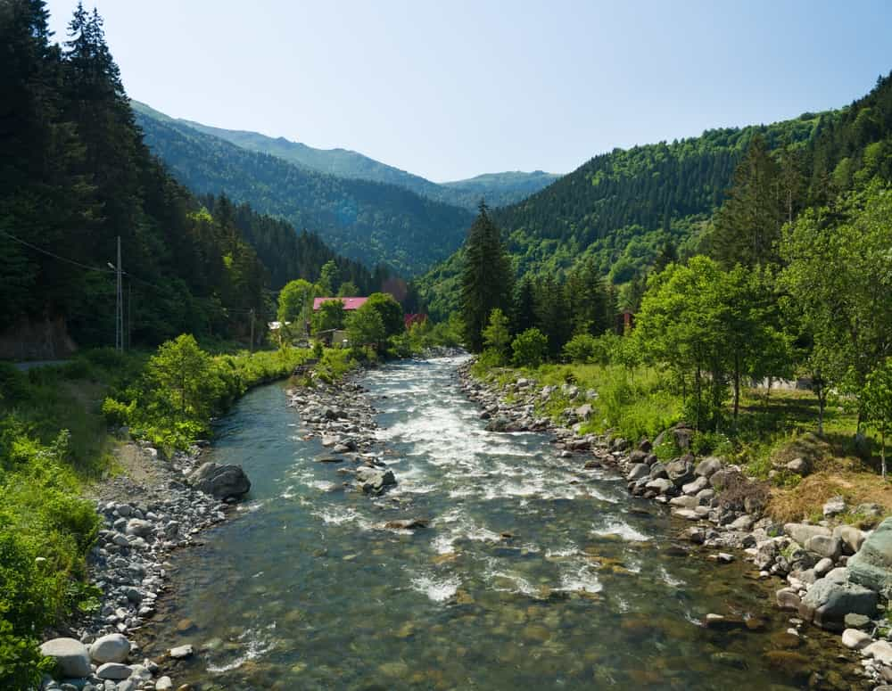
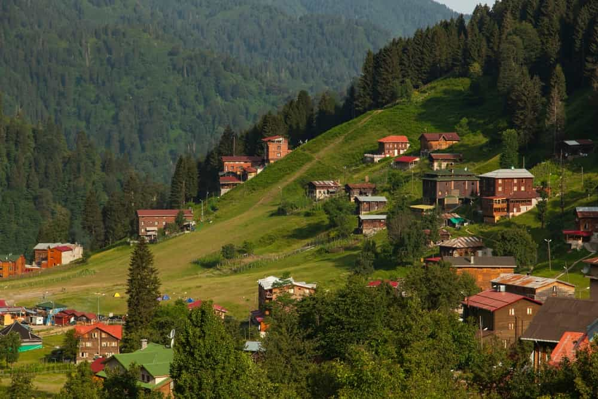

Rize (Antik Yunanca: Ριζαίον, "Rizeon"; Romeika: Ριζούντα, "Rizunda"; Lazca: რიზინი, "Rizini"), Karadeniz Bölgesi'nin Doğu Karadeniz bölümünde yer alan Rize ilinin merkezidir. Tarihi Pontus bölgesinin doğusunda kalan Rize, Osmanlı döneminde Lazistan Sancağı'nda yer almıştır. Günümüzde Türkiye'ye bağlıdır.
Doğuda Çayeli ve Güneysu ile, güneyde İkizdere, batıda Derepazarı ve Kalkandere, kuzeyde Karadeniz ile çevrilidir. Şehrin nüfusu 2009 yılına göre 96.503'tir. 1927'de 14.000 olan nüfusu 1990'da 52.743'e, 2000'de 78.144'e, 2007'de 94.800'e çıkmıştır.
Eski dönemlerde burada Kolhisliler yaşamaktaydı.
Rize, 1204'te Trabzon İmparatorluğu'na bağlanmıştır. 1470'te Fatih Sultan Mehmet tarafından fethedilmiştir.
Spesifik olarak Rize'den bahseden kaynaklara 19. yüzyılda rastlanmaktadır. 18 ve daha sonraki yüzyıllarda yazılmış kaynaklarda Rize'de derebeylik yapmış Tuzcuoğulları ailesinden bahsetmektedir. II. Mahmud'a birkaç kez isyan eden bu aile, 1832'de Tuzcuoğlu İsyanı'nı başlatmıştır. Tuzcuoğulları'na vergi veremeyen köylüler, topraklarını Tuzcuoğulları'na devretmek ve onlar için çalışmak zorundaydı. Rize'deki bir saray bu aileye aftedilmektedir. Tuzcuoğulları ile rekabet halinde olan Trabzonlu Memişoğulları, Memişoğlu ayaklanmasını başlatmıştır. İki aile arasındaki kan davasında birçok üye öldükten sonra Tuzcuoğulları'nın başlıca aile üyeleri teslim olmuş ve Rusçuk-Varna gibi şehirlere sürülmüştür.
Gezgin P. Minas Bijişkyan, bölgede portakal ve limon yetiştirildiğini yazmıştır.
Rize 19. yüzyılın ikinci yarısında Batum'un Ruslara bırakılmasının ardından, Trabzon Vilayetine bağlı Lazistan Sancağının merkezi olmuş, Cumhuriyet döneminde il merkezi olmuştur. I. Dünya Savaşı'nda yaklaşık iki yıl süren Rus işgalinin ardından özellikle çay ekiminin yaygınlaşması ile önemli bir gelişme göstermiştir.

